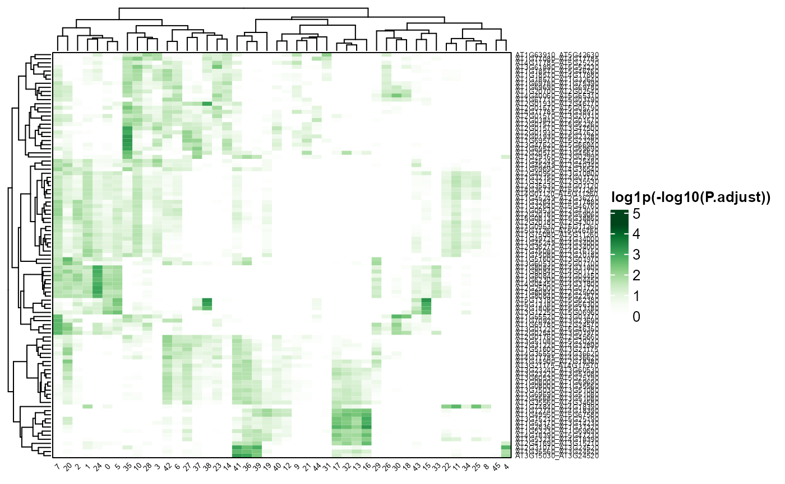
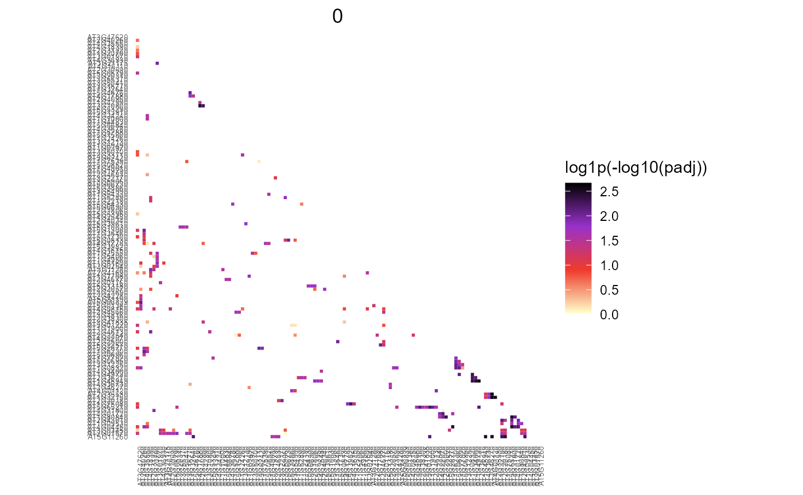
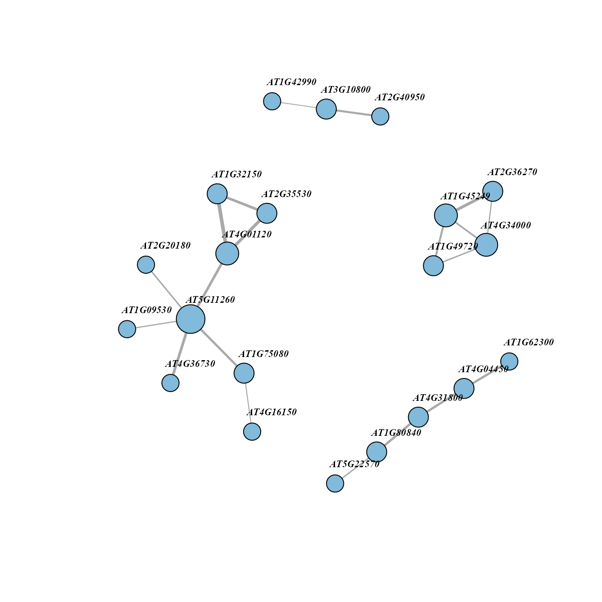

Paired Motif Enrichment
2023-01-06
Source:vignettes/paired_motif_enrichment.Rmd
paired_motif_enrichment.RmdscPlant pipeline have adapted the Paired Motif Enrichment Tool (PMET) (Rich-Griffin et al., 2020) to predict pairs of TF binding motifs within the promoter regions of cell-type specific marker genes. Three plant species (Arabidopsis thaliana, Oryza sativa, Zea mays) are supported for now, and more plant species will be supported soon.
Download and installation
Download databases and scripts
The required databases and scripts to perform Paired Motif Enrichment analysis can be downloaded here.
# Download in linux system:
wget https://biobigdata.nju.edu.cn/scPlantDB/scPlantData.zip
unzip scPlantData.zip
cd scPlantDataDownload genome files
Please download the genome and gff3 files suitable for your scRNA-seq
data. If you already have these files, please copy them to the path
scPlantData/PMET/.
For example, download Arabidopsis thaliana’s TAIR10 genome and gff3:
# To make the program works, we recommend downloading the files to the directory scPlantData/PMET/
wget -O PMET/arabidopsis_thaliana.fa.gz 'https://ftp.ensemblgenomes.ebi.ac.uk/pub/plants/release-55/fasta/arabidopsis_thaliana/dna/Arabidopsis_thaliana.TAIR10.dna.toplevel.fa.gz'
wget -O PMET/arabidopsis_thaliana.gff3.gz 'https://ftp.ensemblgenomes.ebi.ac.uk/pub/plants/release-55/gff3/arabidopsis_thaliana/Arabidopsis_thaliana.TAIR10.55.gff3.gz'
gunzip PMET/arabidopsis_thaliana.fa.gz
gunzip PMET/arabidopsis_thaliana.gff3.gzDownload other species’s genome and gff3 files
Users can download other plant organism’s genome and gff3 files in EnsemblPlants and Phytozome. For example, download Zea mays’s Zm-B73-REFERENCE-NAM-5.0 genome and gff3:
wget -O PMET/zea_mays.fa.gz 'https://ftp.ensemblgenomes.ebi.ac.uk/pub/plants/release-55/fasta/zea_mays/dna/Zea_mays.Zm-B73-REFERENCE-NAM-5.0.dna.toplevel.fa.gz'
wget -O PMET/zea_mays.gff3.gz 'https://ftp.ensemblgenomes.ebi.ac.uk/pub/plants/release-55/gff3/zea_mays/Zea_mays.Zm-B73-REFERENCE-NAM-5.0.55.gff3.gz'
gunzip PMET/zea_mays.fa.gz
gunzip PMET/zea_mays.gff3.gzPaired Motif Enrichment analysis
Help information:
bash RunPMET.sh -hUSAGE: RunPMET [options]
Perform Paired Motif Enrichment Test.
-r <PMET_path> : Full path of directory where PMET scripts exist. Required.
-o <output_directory> : Output directory for results.
-m <gene_inputs> : File containing genes to be tested. Required. A 2 column tab-delimited text file containing cluster ID in column 1 and genes in column 2.
-s <species> : Species. currently At (Arabidopsis thaliana), Os (Oryza sativa), Zm (Zea mays) are supported.Prepare gene input file
Take a true scRNA-seq data of Arabidopsis thaliana (Zhang et al., 2019) as example data (download here), you can use the R codes below to prepare gene input file:
Process the result and visualization
Pre-process original PMET output：
PMETresult <- processPMET("output/output.txt")Heatmap of PMET result：
PMEThmp(PMETresult, topn = 5)
Draw triangle heatmap of PMET result:

Network diagram showing top pairs of a cluster:
topPairsNet(PMETresult, clus = unique(PMETresult$Module)[1], topn = 20)